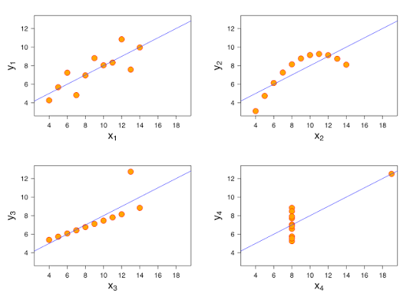

Week 3: Dplyr and more MOEs
What We Did
Key Concepts
Building Visualizations w/ GGPlot
Anscombe’s Quartet: four graphs with vastly different layouts have the same mean, correlation, and regression. This is why we need to analyze the graph, too!

A plot is a mapping from columns in your data to visual properties on your page. GG = “grammar of graphics”.
Using GGPlot
P <- ggplot(data) # this creates a blank canvas
aes(…) # aesthetic mappings; not decoration, only tell factual information on where the columns will go on the plot
geom() # the shape/type of chart
ggplot(tract_data) + aes(x=population, y=moe_pct) + geom_point(color=blue)
| Inside aes() | Not inside aes() |
|---|---|
| aes(Color = reliability) | color = “example_color” |
| decorations |
Geometry Options
| What I want to know | GEOM |
|---|---|
| How a variable is spread | geom_histogram() |
| How 2 variables relate | geom_point() |
| How 2 variables compare | geom_boxplot() or geom(col) |
| How things change over time | geom_line() |
| How uncertain is a value | geom_errorbar() |
Error Bar Charts
county_data %>% ggplot(aes(x = NAME, y = estimate))
+ geom_col()
+ geom_errorbar(aes(ymin = estimate - moe, ymax = estimate + moe))
This plot is extremely messy, and I’ll get killed if I turn that in.

This is a better version that cleans up some of the issues.
county_data %>% arrange(desc(moe_pct))
%>% slice_head(n = 15)
%>% ggplot(aes(x = NAME, y = estimate))
+ geom_col()
+ geom_errorbar(aes(ymin = estimate - moe, ymax = estimate + moe))
Flip to make names more readable:
county_data %>% arrange(desc(moe_pct))
%>% slice_head(n = 15)
%>% ggplot(aes(x = NAME, y = estimate))
+ geom_col()
+ geom_errorbar(aes(ymin = estimate - moe, ymax = estimate + moe))
+ coord_flip()
Sort bars by bar length rather than alphabetically:
county_data %>% arrange(desc(moe_pct))
%>% slice_head(n = 15)
%>% ggplot(aes(x = reorder(NAME, estimate), y = estimate))
+ geom_col()
+ geom_errorbar(aes(ymin = estimate - moe, ymax = estimate + moe))
+ coord_flip()
Remove “County, New York”
county_data %>% arrange(desc(moe_pct))
%>% mutate(NAME = str_remove(NAME, ” County, New York”))
%>% slice_head(n = 15) %>% ggplot(aes(x = reorder(NAME, estimate), y = estimate))
+ geom_col()
+ geom_errorbar(aes(ymin = estimate - moe, ymax = estimate + moe))
+ coord_flip()
Change to narrower width of the error bars
county_data %>% arrange(desc(moe_pct))
%>% mutate(NAME = str_remove(NAME, ” County, New York”))
%>% slice_head(n = 15) %>% ggplot(aes(x = reorder(NAME, estimate), y = estimate))
+ geom_col()
+ geom_errorbar(aes(ymin = estimate - moe, ymax = estimate + moe), width = 0.3)
+ coord_flip()
Tidy up with a nice theme:
county_data %>% arrange(desc(moe_pct))
%>% mutate(NAME = str_remove(NAME, ” County, New York”))
%>% slice_head(n = 15)
%>% ggplot(aes(x = reorder(NAME, estimate), y = estimate))
+ geom_col(fill = “steelblue”)
+ geom_errorbar(aes(ymin = estimate - moe, ymax = estimate + moe), width = 0.3)
+ coord_flip()
+ theme_minimal()
Fix labels and numbers:
county_data %>% arrange(desc(moe_pct))
%>% mutate(NAME = str_remove(NAME, ” County, New York”))
%>% slice_head(n = 15)
%>% ggplot(aes(x = reorder(NAME, estimate), y = estimate)) + geom_col(fill = “steelblue”) +
geom_errorbar(aes(ymin = estimate - moe, ymax = estimate + moe), width = 0.3) + coord_flip() +
theme_minimal() + scale_y_continuous(labels = scales::comma) +
labs( title = “Counties with the largest margins of error”, subtitle = “People below 100% of the poverty level, ACS 2023 5-year estimates”, x = NULL, y = “Population below poverty level” )

Coefficient of Variation (CV)
This is a relative measure of sampling error.
Low CV -> 15%; high reliability
Medium CV-> 15-30%; medium reliability
High CV -> 30+%; high sampling error, low reliability
moe_sum() -> adding estimates together
moe_prop -> one estimate as share of another
moe_ratio() -> poverty_num / household_income
90% of the time in a normal distribution, the value will fall within 1.645 standard deviations of the mean.
ACS MOE
- Tells us the 90% confidence interval; a higher value is worse
- Estimate could be 20% +- 3.0 standard deviations